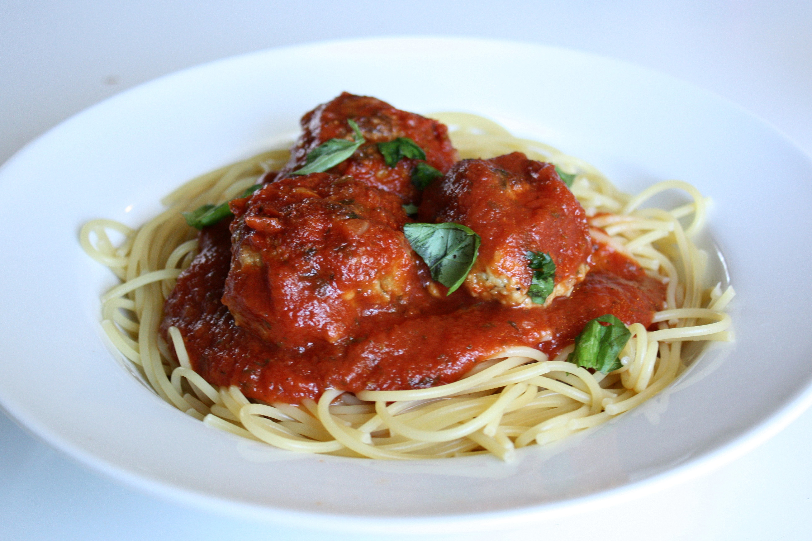

Ever hear the phrase: "mom's spaghetti"? Yes? Great! No? Well, now you have! You've reached the only aunthentic place to recreate mom's spaghetti. It's super easy, and it's always paired best with garlic toast, parmesan cheese, red wine and... you guessed it! Friends!
If this recipe makes you never touch another spaghetti again, that isn't mom's... then don't forget to share!